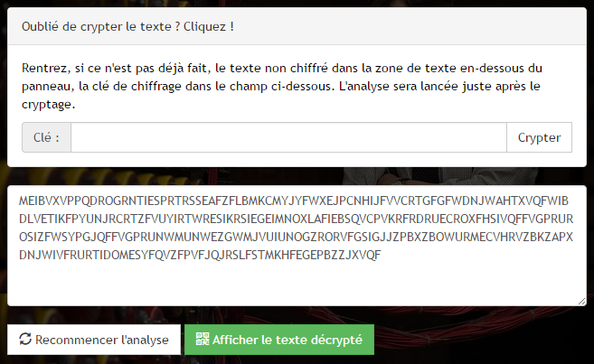
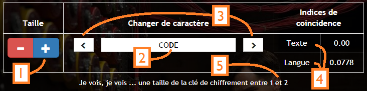
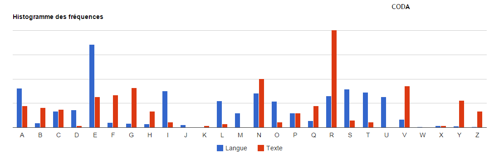
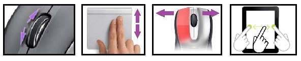
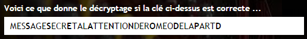
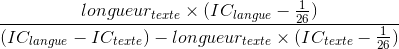

| M | E | S | S | A | G | E | S | E | C | R | E | T |
| + | + | + | + | + | + | + | + | + | + | + | + | + |
| C | O | D | E | C | O | D | E | C | O | D | E | C |
| = | = | = | = | = | = | = | = | = | = | = | = | = |
| O | S | V | W | C | U | H | W | G | Q | U | I | V |
Voilà ! C'est simple le chiffre de Vigenere, non ? Allez, on va expliquer plus en détails.
Le chiffre (ou chiffrement) de Vigenère est un procédé de cryptographie polyalphabétique, c'est-à-dire qu'on utilise un mot appelé "clé" de plusieurs lettres pour réaliser le chiffrement (ici, c'est le mot "CODE").
On procède à un décalage de l'alphabet déterminé par chaque caractère de la clé. Par convention, 'A' correspond à un décalage nul, 'B' un décalage de 1, 'C' de 2, etc... Exemple du tableau : pour la 1ère lettre 'M', je code avec un 'C' (décalage de 2 lettres), et la lettre devient un 'O' (M -> N -> O). Et si, en décalant, on déborde et qu'on va plus loin que le 'Z', et bien, on repart pour un tour : Y -> Z -> A -> B...
Ce principe de décalage implique qu'une lettre est associée à une et une seule autre lettre par cette transformation.
Or, l'interêt du chiffre de Vigenère est que deux lettres identiques du texte à crypter ne donnent pas toujours les mêmes lettres dans le texte crypté et vice versa.
Si vous utilisez une clé d'une seule lettre, le décalage appliqué est identique pour toutes les lettres. Et déterminer le décalage unique à tout le texte est très simple : trouvez la lettre qui apparaît le plus dans le texte crypté, et on est presque sûr qu'elle correspond à la lettre la plus fréquente théoriquement dans la langue du texte à déchiffrer. Une petite soustraction, et on a la taille du décalage ! Pour la culture (c'est pour moi, c'est cadeau), ce chiffrage monoalphabétique s'appelle chiffre de César.
Pour le chiffre de Vigenère (avec une clé de N lettres), l'astuce va etre la même, mais il va falloir au préalable deviner la taille de la clé. Et si on devine juste, on sait alors que, périodiquement (1 fois sur N), une lettre du texte crypté correspond toujours à la même lettre du texte à déchiffrer (parce qu'elle a été codée avec le même caractère de la clé, regardez dans le tableau au-dessus les deux S qui deviennent des W).
Et bien, il vous reste ... la page Wikipédia ! On ne sait jamais.
Avec la clé "", voici ce que donne le texte décrypté :
Ajoutez des espaces pour aérer et vérifier que le texte est correct.
Copiez-collez dans la zone de texte principale le texte crypté, l'analyse sera lancée automatiquement. Si le texte n'est pas crypté, depliez le panneau juste au-dessus.
Les fonctionnalités résumées en 5 points pour percer la clé de chiffrement:
Il représente, en bleu, les fréquences d'apparition des lettres dans la langue du texte (modifiable via le menu déroulant en haut de page), et en rouge, les fréquences "partielles" du texte crypté, "partielles" car uniquement les lettres du texte crypté qui sont en principe chiffrés par le caractère ciblé de la clé, choisi dans le tableau.
Vous pouvez manipuler l'histogramme pour superposer les deux histogrammes et deviner la valeur du caractère de la clé ciblé. En bougeant l'histogramme rouge, la caractère ciblé se modifie aussi. Voici les possibilités d'actions à exécuter sur l'histogramme :
Dès que vous pensez avoir trouvé la bonne clé, vous pouvez retrouver le résultat complet en appuyant sur le bouton vert en-dessous de la zone de texte. Mais vous déjà voir un apercu du déchiffrage en direct en-dessous de l'histogramme, avec en gras les caractères du début du texte chiffrés par le caractère de la clé que vous avez ciblé.
Rentrez le texte original dans la zone de texte ci-dessous, et la clé de chiffrage dans le champ correspondant. Nous nous occupons du reste : formattage, cryptage, et analyse !
Si les courbes rouge et bleue sont proches à une abscisse N, alors il est très probable que la clé soit de taille N. A vous désormais de trouver les bons caractères !
Une dernière statistique, un peu moins fiable et que nous appelerons "formule du devin", est calculée à partir de l'équation ci-dessous.
Alors, devin, dites-nous tout !
"Je vois, je vois ... une taille de la clé de chiffrement entre caractères. J'ai bon ?"